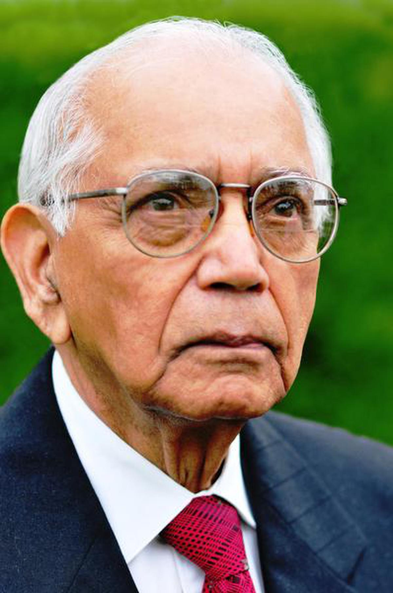

Calyampudi Radhakrishna Rao(C.R.Rao)was apioneering Indian-American statistician whose work transformed modern statistics.Key contributes include the Cramer-RaoBound, which defines the lower limit of the variance of an estimator, and the Rao-Blackwell Theorem, which improves estimator efficiency.He introduced the Fisher-Rao Metric,foundational in statisticial inference and machine learning, and made significant in multivariate analysis, orthogonal arrays for experimental design, and the Rao Score Test for hypothesis testing.
Rao's work found applications in genetics, economics, artificial intelligence, and big data analytics. His seminal book, Statistical Inference and Its Applications, remains a cornerstone of statistical education. Honored globally, he received the Padma Vibhushan, the International Prize in Statistics, and membership in prestigious scientific societies. His legacy continues through the C.R. Rao Advanced Institute of Mathematics, Statistics, and Computer Science, solidifying his role as a transformative figure in statistics.